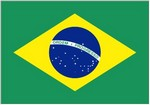
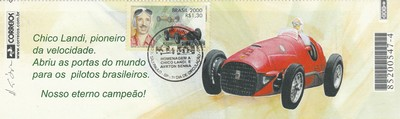
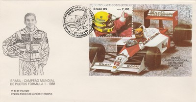

Brazil
|  |
 Issue date: 1994 Ayrton Senna commemoration. On 1st May 1994, Ayrton Senna's Williams FW16 left the track at the Tamburello corner on the seventh lap of the San Marino Grand Prix at Imola and collided with an unprotected concrete barrier. The crash itself was seemingly innocuous because, despite the telemetry later revealing that he was travelling at 193mph when he left the track, the collision itself appeared to be glancing and nobody was prepared for outcome that followed. Tens of thousands of Italian Formula 1 fans looked on, open mouthed and disbelieving as Professor Sid Watkins performed an emergency tracheotomy on the driver whom he later confessed was already beyond saving. Professor Watkins was later quoted as saying "He looked serene. I raised his eyelids and it was clear from his pupils that he had a massive brain injury. We lifted him from the cockpit and laid him on the ground. As we did, he sighed and, although I am totally agnostic, I felt his soul depart at that moment." Despite numerous conspiracy theories about what actually happened that day, it is generally accepted that the impact of the collision had caused one of the suspension beams to come adrift, piercing Senna's helmet and causing inter-cranial trauma just above his right eye. The incident followed a period of six laps where the drivers had been under the control of the safety-car and it was clear from the on-board camera on Michael Schumacher's Benetton that Senna's car was suffering from a notable loss of traction as the race restarted.  Issue date: 2000 Francisco Sacco Landi, better known as Chico Landi (July 14, 1907 - June 7, 1989) was a racing driver from Sao Paulo, Brazil. He participated in 6 Formula One World Championship Grands Prix, debuting on September 16, 1951. He scored a total of 1.5 championship points, awarded for his 4th place finish in the 1956 Argentine Grand Prix (driving a Maserati), a drive he shared with Gerino Gerini. Landi was the first Brazilian driver to drive a Ferrari in a Formula One race, albeit not for the works team, and he drove one to victory at the Bari Grand Prix in 1948.  Issue date: 2000 Ayrton Senna da Silva, Sao Paulo, March 21, 1960, Bologna Italy May 1, 1994) was a Brazilian racing driver and three-time Formula One world champion. He was killed in a crash while leading the 1994 San Marino Grand Prix, and remains the most recent Grand Prix driver to die at the wheel of a Formula One car. Senna is regarded as one of the greatest drivers in the history of Formula One.  Issue date: 1988 Nelson Piquet competed in F1 from 1978 to 1991, he won the drivers championship three times in all, in 1981 and 1983 driving a Brabham (BT49C and BT52) for the Parmalat Racing Team and in 1987 driving the Williams FW11B. Piquet moved to Williams in 1986 which saw him becoming the team-mate of one of his fiercest rivals, Nigel Mansell. Both were regarded as highly strung characters with delicate temperaments. Two top drivers in the same team was a recipe for fireworks - and sure enough Mansell and Piquet went head to head for the title. Though the two drove the best cars on the grid, their rivalry caused each to deprive the other of points, allowing Alain Prost to win one of the closest and most fiercely disputed championships ever in F1.  Issue date: 23rd March 1989 A special stamp issue commemorating Ayrton Senna's 1988 drivers' title. 1988 was Senna's first season with McLaren; it was Senna's first drivers' title (just beating team mate Alain Prost). McLaren comfortably won the constructors' title too.  Issue date: 1972 A special stamp issue commemorating Emerson Fittipaldi's 1972 drivers' title. Lotus took both championships by surprise in 1972 with 25-year old Brazilian driver Emerson Fittipaldi who became the youngest world champion at that point.  Issue date: 29th July 1983 A mini sheet commemorating Brazilian driver success in the F1 world drivers' championship: - 1972 - Emerson Fittipaldi, Lotus 72D - 1974 - Emerson Fittipaldi, McLaren M23 - 1981 - Nelson Piquet, Brabham BT49C/BT50 |